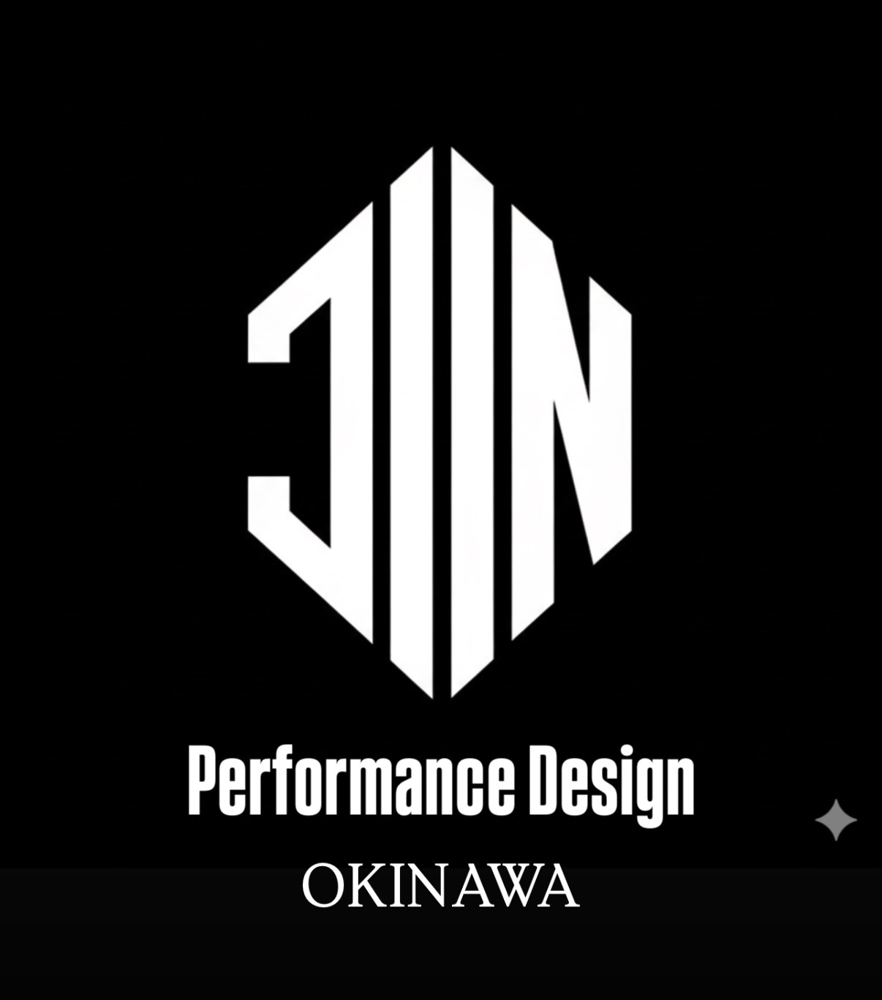

Coach
コーチ紹介

Jinichi Tokashiki
Head Coach / Performance Coordinator
渡嘉敷 陣一
代表 / Head Coach · Founder
Tokashiki Jinichi · 八重瀬町出身 · 1988.9.13
柔道整復師
パフォーマンスコーチ
パフォーマンスコンディショニング統括トレーナー
経歴
- 東風平ヤンキース → 東風平中学校 → 糸満高校 → JABA社会人野球
- スポーツ整形クリニック勤務 7年（メカニクス・アスレティックリハビリテーション）
- JABA社会人野球チーム 専属コンディショニングトレーナー 5年帯同
- 沖縄県にてJIN BASEBALL独立開業
専門領域
- 投打の動作改善指導（メカニクス）
- パフォーマンスアップ・障害予防・コンディショニング
- トレーニング指導（ジュニア〜プロ）
指導実績
- 5,000人以上の指導実績（少年野球〜NPB）
- 県内外 30チーム以上（少年・中学・高校・大学・社会人）
- JWL（Japan Winter League）帯同トレーナー
NPB 自主トレサポート
- 中日ドラゴンズ
- オリックスバファローズ
- ソフトバンクホークス
- 広島東洋カープ
独立リーグ サポート
- 徳島インディゴソックス
- 栃木ゴールデンブレーブス
- 福島レッドホープス
- 高知ファイティングドックス
- 愛媛マンダリンパイレーツ
- 琉球ブルーオーシャン
メディア掲載・出演
- プロ野球沖縄県人会 サポートスタッフ
- RBCiラジオ / FM沖縄
- 大野倫のフィールド・オブ・ドリームス（ラジオ）
- 中日新聞 / 琉球新報 / 沖縄タイムス
- クニヨシTV（YouTube）
- 『野球大好き』〜 ベースボールマガジン